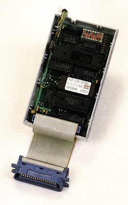

Der verbesserte Alleskönner
Es gibt Drucker, die fast jeden Wunsch erfüllen — nur können diese Drucker meist nicht ohne ein spezielles Interface am C 64 angeschlossen werden. Einen guten Eindruck macht das neue HDS-Interface.
Unter der Bezeichnung PCB C128 (DZ 300) ist ein neues Drucker-Interface für den C 64/C 128 auf den Markt gekommen (Bild 1). Dieses Interface, das von HDS vertrieben wird, baut auf dem Vorgängermodell PCB IF64/128 auf, leistet aber erheblich mehr.

Das Interface besitzt vier Arten, Daten vom C 64 oder C 128 zu verarbeiten:
- In den beiden Commodore-Modi werden alle Zeichen so gedruckt, wie sie auf dem Bildschirm erscheinen.
-
Erstmals ist auch die DIN-Tastatur des C 128 berücksichtigt. Somit lassen sich mit jedem grafikfähigen Drucker die europäischen Sonderzeichen (ä, ö etc.) ausgeben.
-
Im Direktmodus werden die Daten ohne Umcodierung zum Drucker geschickt. Wichtig ist das zum Drucken von Hardcopies.
-
Durch die Umwandlung in ASCII-Zeichen können auch Typenraddrucker angeschlossen werden.
Jeder dieser vier Arten der Datenbehandlung ist eine Funktion zugeordnet, Über den Kommandokanal läßt sich nun eine beliebige Sekundäradresse mit einer der Funktionen 1 bis 4 belegen. Außerdem stehen über DIP-Schalter vier Grundeinstellungen zur Verfügung, die verschiedene Interfaces simulieren.
Als Neuerung ist hinzugekommen, daß eine der vier Funktionen für alle Sekundäradressen fixiert werden kann. Außerdem ist es möglich, die Sekundäradressen, die ein Programm an das Interface sendet, vor dem Drucken der Daten auszugeben.
Das neue Interface funktioniert auch im CP/M-Modus des C 128 und arbeitet mit CP/M-Programmen zusammen. Auch kommt es mit dem schnellen seriellen Bus des C 128 zurecht. Dadurch erhöht sich die Übertragungsgeschwindigkeit von 300 auf maximal 1200 Zeichen pro Sekunde. Um diese hohe Übertragungsgeschwindigkeit voll nutzen zu können, ist ein 8 beziehungsweise 32-KByte-RAM-Puffer eingebaut.
Mit den acht, im Interface integrierten, DIP-Schaltern läßt sich der Druckertyp, die Geräteadresse, der Zeichensatz (DIN/ASCII), die Einschaltkonfiguration der Sekundäradressen und Auto-Linefeed ein/aus einstellen.
Mit einem Preis von 298 Mark für die 8- beziehungsweise 378 Mark für die 32-KByte-RAM-Version gehört das PCB C128 zwar zur oberen Preisklasse, dafür ist es aber eines der besten, die zur Zeit zu haben sind.
(ah)Info: HDS Prüftechnik GmbH, Maria-Eich-Staße 1, 8000 München 60, Tel. (089) 837021/22